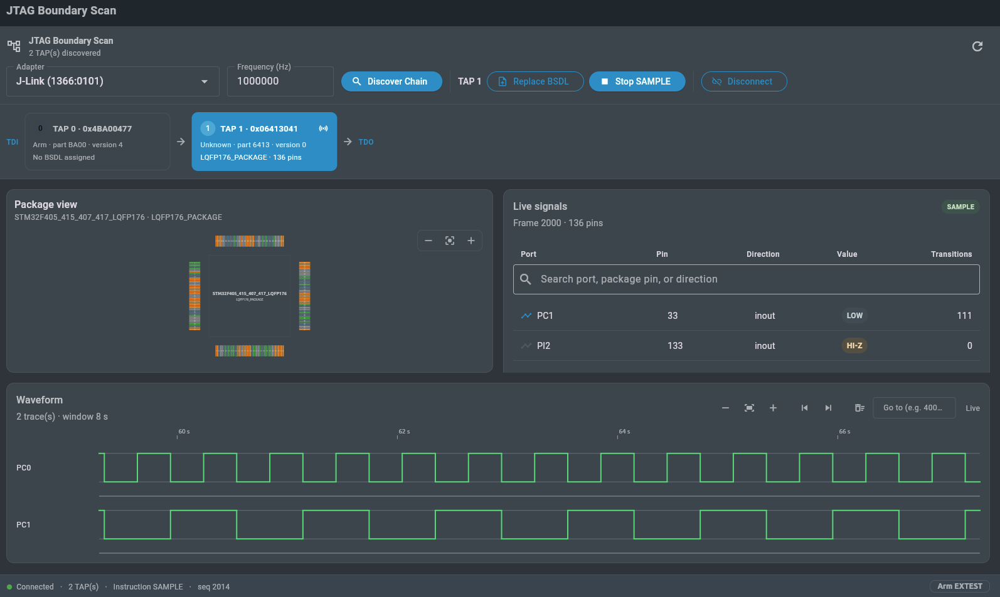

IEEE 1149.1 · SAMPLE · PRELOAD · EXTEST
JTAG Boundary Scan
Read every pin on a running board straight off the chain, and see it painted back onto the package — live, at 30 Hz, without a single probe tip.
Operations
Three instructions, one TAP
In the order of how much trouble they can cause. Only the last one drives silicon.
Observe · SAMPLE
Watch the board run
Captures the boundary register while the target keeps executing. Nothing is driven, nothing is halted.
Stage · PRELOAD
Stage values first
Set a drive value per pin. Every cell you did not touch takes the safe value the BSDL declares.
Drive · EXTEST
Take the pins
Drive a net, read it back at the far end, and prove the trace. Behind a separate arming step.
Workspace
Chain, package and signals in one window
The map tells you where on the part a problem is. The table tells you what the value is.

Chain first
A TAP needs a BSDL before anything else unlocks.
Colour is the value
One palette across the map, the table and the waveform.
Search, don't scroll
Filter by port, pin or direction; pin any signal to the waveform.
Arming is loud
EXTEST is a separate red control with a confirmation dialog.
Safety
EXTEST can damage hardware
Driving a pin something else already drives is bus contention. Three defences, all on by default.
Safe values everywhere
Cells you did not stage take the safe value from the device's own BSDL.
Preload, then arm
Values reach the update latch before EXTEST is ever selected.
One way back
Leaving EXTEST returns the pins to the target and drops back to SAMPLE.
Specifications
What it runs on
Adapters
Any debug probe with raw JTAG access — J-Link, CMSIS-DAP, FTDI. Clock set per session, 1 MHz by default.
Devices
Any part with a published BSDL. Chain discovery decodes IDCODE and manufacturer for every TAP.
Packages drawn
DIP · QFP · PLCC · BGA, from the BSDL pin map. Anything else falls back to the signal table.
Operations
SAMPLE streaming, PRELOAD staging and EXTEST driving, with a waveform for any traced pin.
Platforms
Linux, Windows and macOS desktop, shipped as a standalone application.
Licensing
A signed licence bound to the machine's device fingerprint. Take a 7-day trial, then work fully offline.
Point it at a board you have no schematics for
Chain, pin map and live values in about ninety seconds, provided the vendor published a BSDL.